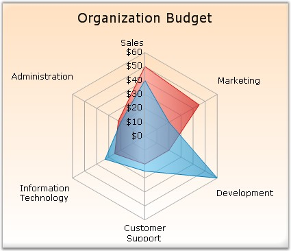

Radar Chart is the clock face form of a line chart. It represents each data series as a line around a central point. The category (x) variable is plotted at equally spaced points around the clock. The y variable is plotted as a radius, so each category has its own y-axis radiating from the center.
Some scenarios where this chart type could be used
· When you want to compare the aggregate values of a number of data series.
· Graphically display the differences between actual and ideal performance, thereby using this chart to define performance and identifying strengths and weaknesses.
· This is also an ideal chart to use when the categories have a natural cyclic order, for example, seasons of the year.
Radar charts supports plotting the axis values in the reverse direction / clockwise direction also, by setting the Inversed property of axis to true.

Figure 83: Chart displaying Radar Series
Chart Details
|
Details | |
|
Number of Y values per point |
1. |
|
Number of Series |
One. |
|
Cannot be Combined with |
Any other chart types. |
Radar series can be added to the chart using the following code.
|
[C#]
// Create chart series and add data points into it. ChartSeries series = this.ChartWebControl1.Model.NewSeries ("Series Name",ChartSeriesType.Radar); series.Points.Add(1, 83); series.Points.Add(2, 79); series.Points.Add(3, 48); series.Points.Add(4, 46); series.Points.Add(5, 42);
// Add the series to the chart series collection. this.ChartWebControl1.Series.Add (series); |
|
[VB.NET]
' Create chart series and add data points into it. Dim series As ChartSeries = Me.ChartWebControl1.Model.NewSeries ("Series Name",ChartSeriesType.Radar) series.Points.Add(1, 83) series.Points.Add(2, 79) series.Points.Add(3, 48) series.Points.Add(4, 46) series.Points.Add(5, 42)
' Add the series to the chart series collection. Me.ChartWebControl1.Series.Add (series) |